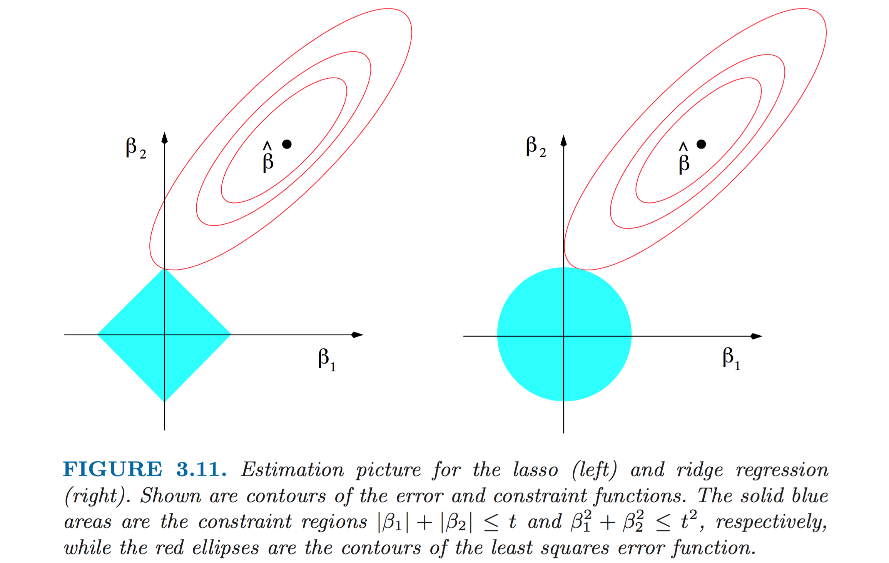
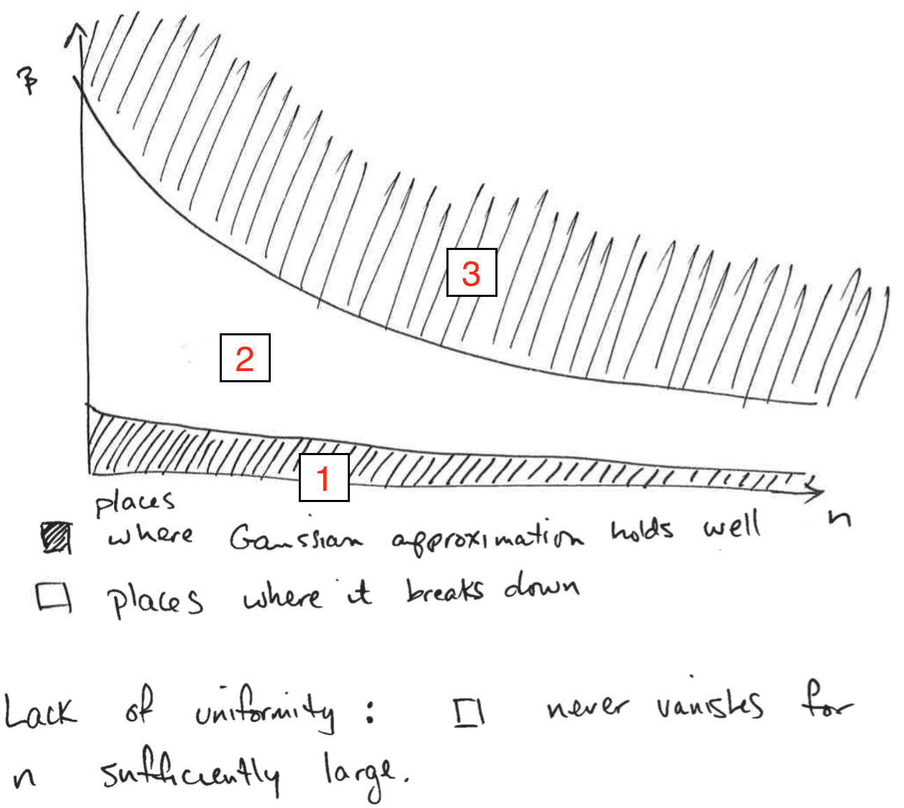

Variable Selection
Last updated on Oct 29, 2021
Lasso
Issue
Lasso (Least Absolute Shrinkage and Selection Operator) is a popular method for high dimensional regression. It does variable selection and estimation simultaneously. It is a non-parametric (series) estimation technique part of a general class of estimators called penalized estimators. It allows the number of regressors, $p$, to be larger than the sample size, $n$.
Consider data $D = \lbrace x_i, y_i \rbrace_{i=1}^n$ with $\dim (x_i) = p$. Assume that $p$ is large relative to $n$. Two possible reasons:
- we have an intrinsic problem of high dimensionality
- $p$ indicates the number of expansion terms of small number of underlying important variables (e.g. series estimation)
Assumption: $y_i = x_i’ \beta_0 + r_i + \varepsilon_i$ where $\beta_0$ depends on $p$, $r_i$ is a remainder term.
Note that in classic non-parametrics, we have $x_i’\beta_0$ as $p_1(x_i) \beta_{1,K} + \dots + p_K(x_i) \beta_{K,K}$. For simplicity, we assume $r_i = 0$, as if we had extreme undersmoothing. Hence the model becomes: $$ y_i = x_i’ \beta_0 + \varepsilon_i, \qquad p \geq n $$ We cannot run OLS because $p \geq n$, thus the rank condition is violated.
Definition
We define the Lasso estimator as $$ \hat{\beta}_L = \arg \min \quad \underbrace{\mathbb E_n \Big[ (y_i - x_i’ \beta)^2 \Big]} _ {\text{SSR term}} + \underbrace{\frac{\lambda}{n} \sum _ {j=1}^{P} | \beta_j |} _ {\text{Penalty term}} $$ where $\lambda$ is called penalty parameter.
The penalty term discourages large values of $| \beta_j |$. The choice of $\lambda$ is analogous to the choice of $K$ in series estimation and $h$ in kernel estimation.
Penalties
The shrinkage to zero of the coefficients directly follows from the $|| \cdot ||_1$ norm. On the contrary, another famous penalized estimator, ridge regression, uses the $|| \cdot ||_2$ norm and does not have this property.
Minimizing SSR + penalty is equivalent to minimize SSR $s.t.$ pen $\leq c$ (clear from the picture).
Sparsity
Let $S_0 = \lbrace j: \beta_{0,j} \ne 0 \rbrace$, we define $s_0 = |S_0|$ as the sparsity of $\beta_0$. If $s_0/n \to 0$, we are dealing with a sparse regression (analogous of smooth regression).
Remark on sparsity:
- In words, sparsity means that even if we have a lot of variables, only a small number of them (relative to $n$) have an effect on the dependent variable.
- Approximate sparsity imposes a restriction that only $s_0$ variables among all of $x_{ij}$, where $s_0$ is much smaller than $n$, have associated coefficients $\beta_{0j}$ that are different from zero, while permitting a nonzero approximation error. Thus, estimators for this kind of model attempt to learn the identities of the variables with large nonzero coefficients, while simultaneously estimating these coefficients. (Belloni et al., 2004)
- Sparsity is an assumption. $\beta_0$ is said to be $s_0$-sparse with $s_0 < n$ if $$ | \lbrace j: \beta_{0j} \neq 0 \rbrace | \leq s_0 $$
Lasso Theorem
Theorem
Suppose that for data $D_n = (y_i, x_i){i=1}^N$ with $y_i = x_i’ \beta + \varepsilon_i$. Let $\hat{\beta}L$ be the Lasso estimator. Let $\mathcal{S} = 2 \max_j | \mathbb E[ x{ij} \varepsilon_i] |$. Suppose $|support(\beta_0) \leq s_0$ (sparsity assumption). Let $c_0 = (\mathcal{S} + \lambda/n )/(-\mathcal{S} + \lambda/n )$. Let $$ \kappa{c_0, s_0} = \min_{ d \in \mathbb R^p, A \subseteq \lbrace 1, … , p \rbrace : |A| \leq s_0 , || d_{A^c}|| \leq c_0 || d_A ||_1 } \sqrt{ \frac{ s_0 d’ \mathbb E_n [x_i x_i’] d }{|| d_A ||_1^2} } $$ Then
$$ \mathbb I_{ \left\lbrace \frac{\lambda}{n} > \mathcal{S} \right\rbrace} \mathbb E_n [(x_i \beta_0 - x_i \beta_L)^2]^{\frac{1}{2}} \leq 2 \frac{\lambda}{n} \frac{\sqrt{s_0}}{\kappa_{c_0, s_0}} $$
Intuition: for a sufficiently high lambda the root mean squared error of Lasso is approximately zero.
$$ \text{ RMSE }: \mathbb E_n [(x_i \beta_0 - x_i \beta_L)^2]^{\frac{1}{2}} \simeq 0 \quad \Leftrightarrow \quad \frac{\lambda}{n} > \mathcal{S} $$
Remarks
- The minimization region is the set of “essentially sparse” vectors $d \in \mathbb R^p$, where “essentially sparse” is defined by $\mathcal{C}, \mathcal{S}$. In particular the condition $k_{\mathcal{C}, \mathcal{S}}>0$ means that no essentially sparse vector $d$ has $\mathbb E[x_i x_i’]d = 0$, i.e. regressors were not added multiple times.
- Need to dominate the score with the penalty term $\lambda$.
- Need no collinearity on a small ($\leq s_0$) subset of regressors ($\to k_{c_0, s_0}>0$).
When Lasso? For prediction problems in high dimensional environments. NB! Lasso is not good for inference, only for prediction.
In particular, in econometrics it’s used for selecting either
- instruments (predicting $\hat{x}$ in the first stage)
- control variables (next section: double prediction problem, in the first stage and in the reduced form)
Choosing the Optimal Lambda
The choice of $\lambda$ determines the bias-variance tradeoff:
- if $\lambda$ is too big: $\lambda \approx \infty \mathbb \Rightarrow \hat{\beta} \approx 0$;
- if $\lambda$ is too small: $\lambda \approx 0 \mathbb \Rightarrow$ overfitting.
Possible solutions: Bonferroni correction, bootstrapping or $\frac{\lambda}{n} \asymp \sqrt{\frac{\log(p)}{n}}$ (asymptotically equal to), $\mathcal{S}$ behaves like the maximum of gaussians.
Lasso Path
How the estimated $\hat{\beta}$ depends on the penalty parameter $\lambda$?

Post Lasso: fit OLS without the penalty with all the nonzero coeficients selected by Lasso in the first step.
Remarks
- Do not do inference with post-Lasso because standard errors are not uniformely valid.
- As $n \to \infty$ the CV and the score domination bounds converge to a unique bound.
- What is the problem of cross-validation? In high dimensional settings you can overfit in so many ways that CV doesn’t work and still overfits.
- Using $\lambda$ with $\frac{\lambda}{n} > \mathcal{S}$ small coefficients get shrunk to zero with high probability. In this case with small we mean $\propto \frac{1}{\sqrt{n}}$ or $2 \max_j | \mathbb E_n[\varepsilon_i x_{ij}] |$.
- If $| \beta_{0j}| \leq \frac{c}{\sqrt{n}}$ for a sufficiently small constant $c$, then $\hat{\beta}_{LASSO} \overset{p}{\to} 0$.
- In standard t-tests $c = 1.96$.
- $\sqrt{n}$ factor is important since it is the demarcation line for reliable statistical detection.
Optimal Lambda
What is the criterium that should guide the selection of $\lambda$? $$ \frac{\lambda}{n} \geq 2 \mathbb E_n[x_{ij} \varepsilon_i] \qquad \forall j \quad \text{ if } Var(x_{ij} \varepsilon_i) = 1 $$
How to choose the optimal $\lambda$:
- Decide the coverage of the confidence intervals ($1-\alpha$): $$ \Pr \left( \sqrt{n} \Big| \mathbb E_n [x_{ij} \varepsilon_i] \Big| > t \right) = 1- \alpha $$
- Solve for $t$
- Get $\lambda$ such that all scores are dominated by $\frac{\lambda}{n}$ with $\alpha%$ probability.
It turns out that the optimal $t \propto \sqrt{\log(p)}$
Pre-Testing
Omitted Variable Bias
Consider two separate statistical models. Assume the following long regression of interest:
$$ y_i = x_i’ \alpha_0+ z_i’ \beta_0 + \varepsilon_i $$
Define the corresponding short regression as
$$ y_i = x_i’ \alpha_0 + v_i \quad \text{ with } v_i = z_i’ \beta_0 + \varepsilon_i $$
Theorem
Suppose that the DGP for the long regression corresponds to $\alpha_0$, $\beta_0$. Suppose further that $\mathbb E[x_i] = 0$, $\mathbb E[z_i] = 0$, $\mathbb E[\varepsilon_i |x_i,z_i] = 0$. Then, unless $\beta_0 = 0$ or $z_i$ is orthogonal to $x_i$, the (sole) stochastic regressor $x_i$ is correlated with the error term in the short regression which implies that the OLS estimator of the short regression is inconsistent for $\alpha_0$ due to the omitted variable bias. In particular, one can show that the plim of the OLS estimator of $\hat{\alpha}{SHORT}$ from the short regression is $$ \hat{\alpha}{SHORT} \overset{p}{\to} \frac{Cov(y_i, x_i)}{Var(x_i)} = \alpha_0 + \beta_0 \frac{Cov(z_i, x_i)}{Var(x_i)} $$
Pre-test bias
Consider data $D= (y_i, x_i, z_i)_{i=1}^n$, where the true model is: $$ \begin{aligned} & y_i = x_i’ \alpha_0 + z_i’ \beta_0 + \varepsilon_i \newline & x_i = z_i’ \gamma_0 + u_i \end{aligned} $$
Where $x_i$ is the variable of interest (we want to make inference on $\alpha_0$) and $z_i$ is a high dimensional set of control variables.
From now on, we will work under the following assumptions:
- $\dim(x_i)=1$ for all $n$
- $\beta_0$ uniformely bounded in $n$
- Strict exogeneity: $\mathbb E[\varepsilon_i | x_i, z_i] = 0$ and $\mathbb E[u_i | z_i] = 0$
- $\beta_0$ and $\gamma_0$ have dimension (and hence value) that depend on $n$
Pre-Testing procedure
- Regress $y_i$ on $x_i$ and $z_i$
- For each $j = 1, …, p = \dim(z_i)$ calculate a test statistic $t_j$
- Let $\hat{T} = \lbrace j: |t_j| > C > 0 \rbrace$ for some constant $C$ (set of statistically significant coefficients).
- Re-run the new “model” using $(x_i, z_{\hat{T},i})$ (i.e. using the selected covariates with statistically significant coefficients).
- Perform statistical inference (i.e. confidence intervals and hypothesis tests) as if no model selection had been done.
Bias
As we can see from the figure above (code below), running the short regression instead of the long one introduces Omitted Variable Bias (second column). Instead, the Pre-Testing estimator is consistent but not normally distributed (third column).
Issue
Pre-testing is problematic because the post-selection estimator is not asymptotically normal. Moreover, for particular data generating processes, it even fails to be consistent at the rate of $\sqrt{n}$ (Belloni et al., 2014).
Intuition: when performing pre-testing, we might have an Omitted Variable Bias problem when $\beta_0>0$ but we fail to reject the null hypothesis $H_0 : \beta_0 = 0$ because of lack of statistical power, i.e. $|\beta_0|$ is small with respect to the sample size. In particular, we fail to reject the null hypothesis for $\beta_0(n) = O \left( \frac{1}{\sqrt{n}}\right)$. However, note that the problem vanishes asymptotically, as the resulting estimator is consistent. In fact, if $\beta_0(n) = O \left( \frac{1}{\sqrt{n}}\right)$, then $\alpha_0 - \hat \alpha_{PRETEST} \overset{p}{\to} \lim_{n \to \infty} \beta_0 \gamma_0 = \lim_{n \to \infty} O \left( \frac{1}{\sqrt{n}} \right) = 0$. We now clarify what it means to have a coefficient depending on the sample size, $\beta_0(n)$.
Uniformity
Concept of uniformity: the DGP varies with $n$. Instead of having a fixed “true” parameter $\beta_0$, you have a sequence $\beta_0(n)$. Having a cofficient that depends on the sample size $n$ is useful to preserve the concept of “small with respect to the sample size” in asymptotic theory.
In the context of Pre-Testing, all problems vanish asymptotically since we are able to always reject the null hypothesis $H_0 : \beta_0 = 0$ when $\beta_0 \neq 0$. In the figure below, I plot simulation results for $\hat \alpha_{PRETESTING}$ for a fixed coefficient $\beta_0$ (first row) and variable coefficient $\beta_0(n)$ that depends on the sample size (second row), for different sample sizes (columns). We see that if $\beta_0$ is independent from the sample size (first row), the distribution of $\hat \alpha_{PRETEST}$ is not normal in small samples and it displays the bimodality that characterizes pre-testing. However, it becomes normal in large samples. On the other hand, when $\beta_0(n)$ depends on the sample size, and in particular $\beta_0 = O \left( \frac{1}{\sqrt{n}} \right)$ (second row), the distribution of $\hat \alpha_{PRETEST}$ stays bimodal even when the sample size increases.
Note that the estimator is always consistent!
Where is Pre-Testing a Problem?
If we were to draw a map of where the gaussianity assumption of $\beta_0(n)$ holds well and where it fails, it would look like the following figure.
Intuition
The intuition for the three different regions (from bottom to top) is the following.
- When $\beta_0 = o \left( \frac{1}{\sqrt{n}} \right)$, $z_i$ is excluded with probability $p \to 1$. But, given that $\beta_0$ is small enough, failing to control for $z_i$ does not introduce large omitted variables bias (Belloni et al., 2014).
- If however the coefficient on the control is “moderately close to zero”, $\beta_0 = O \left( \frac{1}{\sqrt{n}} \right)$, the t-test set-up above cannot distinguish this coefficient from $0$, and the control $z_i$ is dropped with probability $p \to 1$. However, in this case the omitted variable bias generated by excluding $z_i$ scaled by $\sqrt{n}$ does not converge to zero. That is, the standard post-selection estimator is not asymptotically normal and even fails to be consistent at the rate of $\sqrt{n}$ (Belloni et al., 2014).
- Lastly, when $\beta_0$ is large enough, the null pre-testing hypothesis $H_0 : \beta_0 = 0$ will be rejected sufficiently often so that the bias is negligible.
Post-Double Selection
The post-double-selection estimator, $\hat{\alpha}_{PDS}$ solves this problem by doing variable selection via standard t-tests or Lasso-type selectors with the two “true model” equations (first stage and reduced form) that contain the information from the model and then estimating $\alpha_0$ by regressing $y_i$ on $x_i$ and the union of the selected controls. By doing so, $z_i$ is omitted only if its coefficient in both equations is small which greatly limits the potential for omitted variables bias (Belloni et al., 2014).
Intuition: by performing post-double selection, we ensure that both $\beta_0 = O \left( \frac{1}{\sqrt{n}} \right)$ and $\gamma_0 = O \left( \frac{1}{\sqrt{n}} \right)$ so that $\sqrt{n} ( \hat \alpha _ {PRETEST} - \alpha _ 0) \overset{p}{\to} \lim_{n \to \infty} \sqrt{n} \beta_0 \gamma_0 = \lim_{n \to \infty} \sqrt{n} O \left( \frac{1}{n} \right) = 0$ and the estimator is gaussian.
Frisch-Waugh Theorem
Theorem
Consider the data $D = \lbrace x_i, y_i, z_i \rbrace_{i=1}^\infty$ with DGP: $Y = X \alpha + Z \beta + \varepsilon$. The following estimators of $\alpha$ are numerically equivalent (if $[X, Z]$ has full rank):
- $\hat{\alpha}$ from regressing $Y$ on $X, Z$
- $\tilde{\alpha}$ from regressing $Y$ on $\tilde{X}$
- $\bar{\alpha}$ from regressing $\tilde{Y}$ on $\tilde{X}$
where the operation of passing to $Y, X$ to $\tilde{Y}, \tilde{X}$ is called projection out $Z$, e.g.$\tilde{X}$ are the residuals from regressing $X$ on $Z$.
Proof (1)
We want to show that $\hat{\alpha} = \tilde{\alpha}$.
Claim: $\hat{\alpha } = \tilde{\alpha} \Leftrightarrow \tilde{X}’ \left[ (X - \tilde{X})\hat{\alpha} + Z \hat{\beta} +\hat{\varepsilon} \right] = 0$.
Proof of the claim: if $\hat{\alpha} = \tilde{\alpha}$, we can write $Y$ as $$ Y = X \hat{\alpha} + Z \hat{\beta} + \hat{\varepsilon} = \tilde{X} \hat{\alpha} + \underbrace{(X - \tilde{X}) \hat{\alpha } + Z \hat{\beta} + \hat{\varepsilon}}_\text{residual of $Y$ on $\tilde{X} $} = \tilde{X} \tilde{\alpha} + \nu_i $$
Therefore, by the orthogonality property of the OLS residual, it must be that $\tilde{X}’\nu_i= 0$. $$\tag*{$\blacksquare$}$$
Proof (1)
Having established the claim, we want to show that the normal equation $\tilde{X}’ \left[ (X - \tilde{X})\hat{\alpha} + Z \hat{\beta} +\hat{\varepsilon} \right] = 0$ is satisfied. We follow 3 steps:
-
First we have that $\tilde{X}’ (X - \tilde{X})\hat{\alpha} = 0$. This follows from the fact that $\tilde{X}’ = X’ M_Z$ and hence: $$ \begin{aligned} \tilde{X}’ (X - \tilde{X}) & = X’ M_Z (X - M_Z) = X’ M_Z X - X’ \overbrace{M_Z M_Z}^{M_Z} X \newline & = X’M_Z X - X’ M_Z X = 0 \end{aligned} $$
-
$\tilde{X}’ Z \hat{\beta} = 0$ since $\tilde{X}$ is the residual from the regression of $X$ on $Z$, by normal equation it holds that $\tilde{X}’ Z = 0$.
-
$\tilde{X}’ \hat{\varepsilon} = 0$. This follows from (i) $M_Z ’ M_{X, Z} = M_{X,Z}$ and (ii) $X’ M_{X, Z} = 0$: $$ \tilde{X}’ \hat{\varepsilon} = (M_Z X)’ (M_{X, Z} \varepsilon) = X’M_Z’ M_{X, Z} \varepsilon = \underbrace{X’ M_{X, Z}}_0 \varepsilon = 0. $$ $$\tag*{$\blacksquare$}$$
The coefficient $\hat{\alpha}$ is a partial regression coefficient identified from the variation in $X$ that is orthogonal to $Z$. This is often known as residual variation.
Post Double Selection
Setting
Consider again data $D= (y_i, x_i, z_i)_{i=1}^n$, where the true model is: $$ \begin{aligned} & y_i = x_i’ \alpha_0 + z_i’ \beta_0 + \varepsilon_i \newline & x_i = z_i’ \gamma_0 + u_i \end{aligned} $$
We would like to guard against pretest bias if possible, in order to handle high dimensional models. A good pathway towards motivating procedures which guard against pretest bias is a discussion of classical partitioned regression.
Consider a regression $y_i$ on $x_i$ and $z_i$. $x_i$ is the 1-dimensional variable of interest, $z_i$ is a high-dimensional set of control variables. We have the following procedure:
- First Stage selection: lasso $x_i$ on $z_i$. Let the selected variables be collected in the set $S_{FS} \subseteq z_i$
- Reduced Form selection: lasso $y_i$ on $z_i$. Let the selected variables be collected in the set $S_{RF} \subseteq z_i$
- Regress $y_i$ on $x_i$ and $S_{FS} \cup S_{RF}$
PDS Theorem
Theorem
Let $\lbrace P^n\rbrace$ be a sequence of data-generating processes for $D_n = (y_i, x_i, z_i)^n_{i=1} \in (\mathbb R \times \mathbb R \times \mathbb R^p) ^n$ where $p$ depends on $n$. For each $n$, the data are iid with $yi = x_i’\alpha_0^{(n)} + z_i’ \beta_0^{(n)} + \varepsilon_i$ and $x_i = z_i’ \gamma_0^{(n)} + u_i$ where $\mathbb E[\varepsilon_i | x_i,z_i] = 0$ and $\mathbb E[u_i|z_i] = 0$. The sparsity of the vectors $\beta_0^{(n)}$, $\gamma_0^{(n)}$ is controlled by $|| \beta_0^{(n)} ||_0 \leq s$ with $s^2 (\log p)^2/n \to 0$. Suppose that additional regularity conditions on the model selection procedures and moments of the random variables $y_i$ , $x_i$ , $z_i$ as documented in Belloni et al. (2014). Then the confidence intervals, CI, from the post double selection procedure are uniformly valid. That is, for any confidence level $\xi \in (0, 1)$ $$ \Pr(\alpha_0 \in CI) \to 1- \xi $$
In order to have valid confidence intervals you want their bias to be negligibly. Since $$ CI = \left[ \hat{\alpha} \pm \frac{1.96 \cdot \hat{\sigma}}{\sqrt{n}} \right] $$
If the bias is $o \left( \frac{1}{\sqrt{n}} \right)$ then there is no problem since it is asymptotically negligible w.r.t. the magnitude of the confidence interval. If however the the bias is $O \left( \frac{1}{\sqrt{n}} \right)$ then it has the same magnitude of the confidence interval and it does not asymptotically vanish.
Proof (Idea)
The idea of the proof is to use partitioned regression. An alternative way to think about the argument is: bound the omitted variables bias. Omitted variable bias comes from the product of 2 quantities related to the omitted variable:
- Its partial correlation with the outcome, and
- Its partial correlation with the variable of interest.
If both those partial correlations are $O( \sqrt{\log p/n})$, then the omitted variables bias is $(s \times O( \sqrt{\log p/n})^2 = o \left( \frac{1}{\sqrt{n}} \right)$, provided $s^2 (\log p)^2/n \to 0$. Relative to the $\frac{1}{\sqrt{n}}$ convergence rate, the omitted variables bias is negligible.
In our omitted variable bias case, we want $| \beta_0 \gamma_0 | = o \left( \frac{1}{\sqrt{n}} \right)$. Post-double selection guarantees that
- Reduced form selection (pre-testing): any “missing” variable has $|\beta_{0j}| \leq \frac{c}{\sqrt{n}}$
- First stage selection (additional): any “missing” variable has $|\gamma_{0j}| \leq \frac{c}{\sqrt{n}}$
As a consequence, as long as the number of omitted variables is finite, the omitted variable bias is $$ OVB(\alpha) = |\beta_{0j}| \cdot|\gamma_{0j}| \leq \frac{c}{\sqrt{n}} \cdot \frac{c}{\sqrt{n}} = \frac{c^2}{n} = o \left(\frac{1}{\sqrt{n}}\right) $$
Distribution
We can plot the distribution of the post-double selection estimator against the pre-testing one.
Remark: under homoskedasticity, the above estimator achieves the semiparametric efficiency bound.